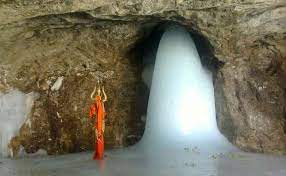
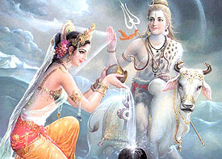
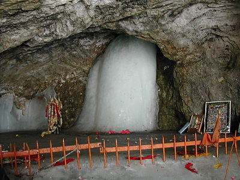
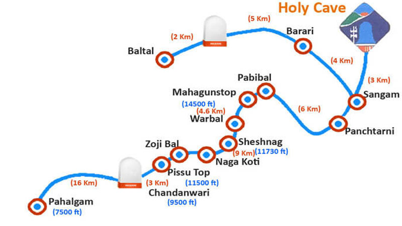

|  | Shri Baba Amarnath |
The Amarnath Katha |
|
|  |
Behind the discovery of the Holy Shrine lies an interesting story. Centuries ago Maa Parvati asked Shivji
to let her know why and when he started wearing the beads of heads (Mund Mala), to which Bhole Shankar replied,
“whenever you are born I add more heads to my bead”. Parvati said, “I die again and again, but you are Immortal.
Please tell me the reason behind this”. "Bhole Shankar replied that for this you will have to listen to the Amar Katha" |
The Holy Cave |
|
Inside the 40 m (130 ft) high cave, a stalagmite is formed due to the freezing of water drops that fall from the roof of the cave onto the floor and grow upward vertically from the cave floor. It is considered to be a Shiva Linga by Hindus. It is mentioned in the ancient Hindu texts of Mahabharata and Puranas that Lingam represents Lord Shiva. The lingam waxes during May to August, as snow melts in the Himalayas above the cave, and the resultant water seeps into the rocks that form the cave; thereafter, the lingam gradually wanes. As per religious beliefs, it is said that the lingam grows and shrinks with the phases of the moon, reaching its height during the summer festival, although there is no scientific evidence for this belief. According to Hindu religious beliefs, this is the place where Shiva explained the secret of life and eternity to his divine consort, Parvati. |
 |
|  |
Yatra from Baltal to Amarnath Cave:It is the most popular and shortest route to reach the cave. The region of Baltal is 14 km from the Cave and allows people to only walk. Ponies are not allowed. However, one can be carried on 'Dandies'. The trek via Baltal usually takes 1-2 days to complete. This route is advised to be taken by the people who are young, healthy and looking for some adventure amidst the religious trip. Yatra from Pahalgam to Amarnath Cave:This is the most preferable route and is around 47 km from the main Amarnath Cave Site. The first step of Yatra starts at Chandanwari which is 16 km from the Pahalgam base camp and is at 9,500 feet. Then there is Pissu top, which is 3 km away and located at 11,000 ft, Shesnag - 9 km from Pissu top at 11,730 ft, followed by the Panjtarni-12 km ahead and located at 12,000 feet. Pilgrims who cannot walk this far can opt for Helicopter services easily available for it. The trek usually takes 3-5 days one way to complete. |